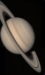

SATURNO
Saturno é o planeta dos anéis espetaculares! Quando você olha para Saturno, é impossível não ficar encantado com seus anéis brilhantes e coloridos, que são os mais impressionantes do sistema solar. Mas não é só isso que faz Saturno incrível – ele é o segundo maior planeta do sistema solar e tem uma atmosfera cheia de tempestades e ventos fortes. Além disso, Saturno é um mestre em colecionar luas, com mais de 80 conhecidas até agora, incluindo Titã, que é maior que Mercúrio e tem uma atmosfera própria!
Saturno é famoso por seus anéis deslumbrantes, que são como joias flutuantes no espaço. Esses anéis são feitos de gelo e rocha e são o destaque do planeta. Saturno é gigante, com um diâmetro de mais de 120.000 quilômetros, e seu tamanho é simplesmente de tirar o fôlego! Além dos anéis, o planeta tem uma atmosfera turbulenta e ventos superpotentes que podem chegar a 1.800 km/h. E, se você adora luas, Saturno é o lugar certo, com um montão de luas fascinantes para explorar!
Material de Estudo